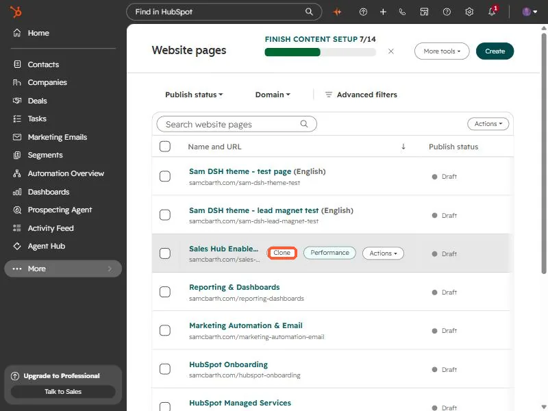
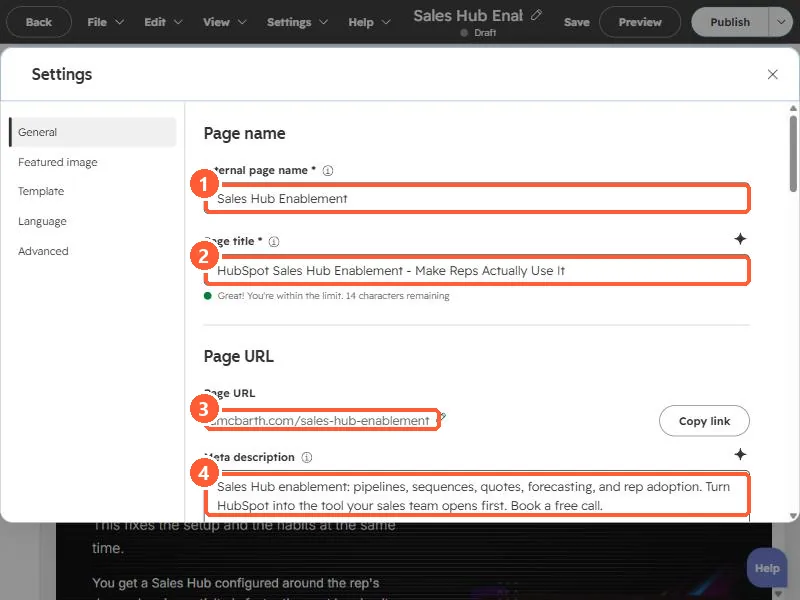

Short answer
Hover the row in the page list and click Clone. In the clone's Settings, change the internal name, page title, URL, and meta description, then replace every piece of location specific content. I cloned one landing page ten times for a home builder's communities, and the checklist below is what I changed each time.
1. Clone from the page list
Open Landing pages or Website pages. Hover the row of the page you want to copy and click Clone. The same row also offers Performance and Actions.


The clone opens as a draft. Nothing is public until you publish it.
2. Change the four settings
In the editor open Settings, then General. Change these four on every clone:
- Internal page name, so you can tell them apart in the list.
- Page title, which is the browser tab and search result title.
- Page URL. A clone's URL differs from the original, so set the one you want.
- Meta description, the search result snippet.


3. Change the content, not just the settings
For each community I replaced the location name, pricing, address, sales office phone, map, images, and community specific copy, using the builder's public website as the source of truth. A short checklist helps:
- Search the clone for the old location name before you publish.
- Check the form: does it route and tag leads by location the way you need?
- Preview on desktop and mobile.
- Give the next person the editor links in one block. Nine editor links, one per line, saved my client a lot of hunting.